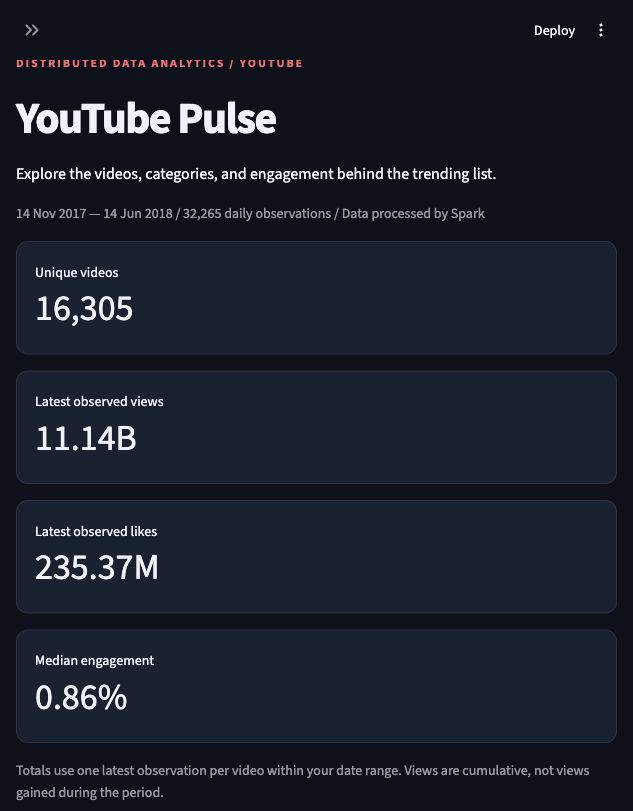

YouTube Pulse
Distributed Batch Analytics
Stores historical YouTube trending records in Hadoop HDFS, processes them in Apache Spark, and explores results in Streamlit.
Core Problem Solved
Trending videos repeat across multiple dates with cumulative view counts. YouTube Pulse separates daily snapshots from each video's latest record so totals never double-count.
Why Trending Video Data Breaks Naive Analytics
1. Repeated Daily Observations
32,265 -> 16,305One video trends across multiple dates. Each row carries its cumulative worldwide views, likes, and comments up to that observation day.
2. Malformed Rows & Multiline Text
5,087 Removed
Source CSV files include multiline descriptions, corrupted IDs like #NAME?,
bad dates, and missing or negative counters that break strict parsing.
3. Unjoined Category Identifiers
69 Unmatched
The CSV stores numeric category_id codes. Human-readable names live in
IN_category_id.json; missing IDs map safely to Unknown.
4. Disabled Ratings & Zero Views
NULL Safe Ratio
Zero-view or ratings-disabled videos must return NULL engagement instead
of dividing by zero or biasing category averages downward.
Worked Example: Double-Counting Trap
Project Scope & Dataset Coverage
Dataset: Public Kaggle archive (datasnaek/youtube-new, Nov 2017 - Jun 2018).
Scope: Historical batch analytics only. Live YouTube API, streaming, and ML prediction are out of scope.
Verified Software Stack & Clear Layer Separation
Storage vs. Compute
HDFS stores replicated raw inputs, Parquet outputs, and Spark event logs. Spark reads blocks directly, transforms records in parallel, and writes results back to HDFS.
Standalone Spark Manager
Uses Spark's native standalone master (:7077) to allocate one executor core per worker process. Keeps resource scheduling lightweight and transparent.
Multi-Country Extensibility
Supports IN (default) plus US, GB, CA, DE, and FR via a single country flag. Every country reuses identical cleaning and audit rules.
Native Zero-Docker Setup
Runs directly on an 8 GB RAM host without Docker or VMs. Pinned dependencies in requirements.lock.txt and Apache SHA-512 checks ensure repeatability.
No MapReduce | No YARN | No Docker / VMs | No External Database | No Live YouTube API
Single-Host Two-Worker Distributed Topology
Six Repository Modules & Their Responsibilities
Runtime Setup
scripts/setup.sh
- Environment: Creates a Python 3.11 venv with pinned packages.
- Integrity: Verifies Hadoop 3.3.6 tar.gz via Apache SHA-512.
- Output: Isolated runtime under
~/.cache/youtube-pulse.
Data Ingestion
download_data.py
- Acquisition: Streams the public Kaggle archive over HTTPS.
- Extraction: Unpacks only the chosen country's CSV and JSON.
- Provenance: Saves URL, byte sizes, and SHA-256 hashes.
Cluster Manager
scripts/cluster.py
- Config: Generates XML configs for master, worker1, worker2.
- Lifecycle: Starts and stops all 7 processes with PID guards.
- Health: Polls NameNode JMX (:9870) and Spark JSON (:8080).
Job Orchestrator
run_pipeline.py
- Upload: Streams raw CSV and JSON into HDFS with replication 2.
- Execution: Launches
spark-submitwith event logging enabled. - Export: Saves 4 JSONL datasets,
dfsadmin, andfsckreports.
Spark Analytics
pipeline/analyze.py
- Cleaning: Validates rows, casts types, and deduplicates by date.
- Enrichment: Broadcast-joins categories and computes engagement.
- Persistence: Writes Parquet + JSON and checks read-back counts.
UI & Verification
dashboard/app.py
- Interface: Serves 4 interactive Plotly tabs and safe CSV download.
- Audit:
verify_results.pymatches Spark outputs in pandas. - Proof:
collect_evidence.pycounts tasks per Spark executor.
Nine-Stage Data Transformation Pipeline
Parquet + JSON Outputs
Parquet keeps typed schemas in HDFS; JSON powers fast dashboard export.
In-Memory Caching
Spark caches snapshots and latest so aggregations avoid re-reads.
Fail-Fast Verification
The job reads back Parquet rows and halts immediately on any mismatch.
Core Engineering Mechanisms in the Source Code
1. Multiline CSV & Explicit Repartitioning
Multiline CSV reads as 1 partition. The job runs raw.repartition(4)
with shuffle.partitions=4 and adaptive.enabled=false so both executors share work.
2. Deterministic Two-Stage Window SQL
Daily window: Keeps 1 row per (country, video_id, date) by highest views.
Latest window: Selects the newest observation per (country, video_id).
3. Strict UTC Parsing & Video Age
Parses yy.dd.MM dates under UTC with timeParserPolicy=CORRECTED, casts
numeric and Boolean flags, and derives days_to_trend from publish date.
4. Broadcast Join & CSV Injection Safety
F.broadcast(categories) avoids shuffling video rows. Before CSV export,
dashboard/app.py prefixes cells starting with = + - @ with '.
Returns NULL if views = 0 or ratings are disabled. Category summaries use median to resist extreme outliers.
Spark Executor Concurrency (Client Mode)
JVM Tuning: -XX:ActiveProcessorCount=1 per executor keeps memory safe on an 8 GB RAM host.
India Dataset: High Reach vs. High Engagement
Top 5 Categories by Views
83.17% of TotalEntertainment captures 38.93% of all observed views across 16,305 unique videos.
Median Engagement (%)
Overall: 0.86%Key Finding: Comedy earns 7x higher engagement than Entertainment despite fewer views.
Streamlit Dashboard & Practical Applications

Four Interactive Tabs + Instant Read-Only Filters
Sidebar filters by date range, category, title/channel search, and minimum views using pandas without launching new Spark jobs.
1. Category Benchmarking
Media teams contrast reach against interaction ratio. Example: spotting Comedy's 4.22% engagement vs. Entertainment's 0.59%.
2. Cross-Country Studies
Researchers switch between IN, US, GB, CA, DE, and FR while keeping identical validation and metric formulas.
3. Big Data Teaching Lab
Students inspect live HDFS DataNode counts, Spark Master status (:8080), and event-log task proofs directly inside Tab 4.
4. Safe Analyst Exports
Analysts rank videos by views, likes, comments, or engagement, open watch links, and download formula-safe CSV files.
Six-Layer Verification Suite & Project Strengths
| Verification Layer | Recorded Outcome |
|---|---|
PySpark Unit Tests (test_analysis.py) |
4 Passed |
Pandas CSV Audit (verify_results.py) |
100% Match |
| HDFS Parquet Read-Back | 32,265 Rows |
HDFS Block Replication (fsck) |
HEALTHY (2 Nodes) |
| Spark Event Log Proof | 29 + 31 Tasks |
| Streamlit AppTest + Restart | Passed | Data Kept |
Lifecycle Verified: All 7 services stopped and restarted cleanly while preserving healthy HDFS blocks and saved analytical artifacts.
1. Independent Ground-Truth Audit
verify_results.py rebuilds latest video stats from the raw CSV in pandas and verifies all 16,305 video IDs, views, likes, and comments.
2. Proven Multi-Executor Execution
Parsing spark-events.jsonl proves both Executor 0 (29 tasks) and Executor 1 (31 tasks) completed work with 0 failures.
3. End-to-End Integrity & Provenance
Apache SHA-512 checks protect Hadoop binaries, SHA-256 hashes track input datasets, and run.json logs exact counts.
4. Honest, Transparent Methodology
Both the UI and report disclose cumulative global counters, disabled-rating nulls, and single-host boundaries openly.
Verified Limits & Scaling to Three Physical PCs
1. Single Physical Host & Shared Disk
Both HDFS replicas live on one Mac disk. Replication demonstrates HDFS mechanics but does not protect against physical hardware failure.
2. Small Dataset Scale (37,352 Rows)
The India CSV fits easily on one laptop. The project proves distributed coordination, not a performance speedup over single-node tools.
3. Historical Sample & Global Counters
Covers 2017-2018 trending lists only. View counts are cumulative worldwide totals, not views gained exclusively inside India.
4. In-Memory UI & Loopback Security
Streamlit loads the full JSONL export into pandas RAM, and local ports lack authentication for public network exposure.
Target 3-PC LAN Topology
Documented / UnverifiedFuture Engineering Roadmap
- 3-PC Verification: Test physical LAN networking and distinct DataNode IPs.
- Larger Workloads: Merge all 6 countries and benchmark multi-GB datasets.
- Direct Query Layer: Query HDFS Parquet directly instead of in-memory pandas.
- Scheduled Ingestion: Add a YouTube Data API v3 collector with quota control.
Four Core Technical Takeaways from YouTube Pulse
Clean Distributed Architecture
Separating storage (HDFS 3.3.6), compute (Spark 3.5.7), and exploration (Streamlit 1.50) produces a modular, maintainable batch pipeline without unnecessary framework bloat.
Disciplined Time-Series Modeling
Two-stage Spark window deduplication preserves 32,265 daily snapshots for trend charts while isolating 16,305 unique videos so cumulative views are never double-counted.
Reach and Engagement Differ Sharply
In the verified India run, Entertainment led views (4.34B) while Comedy achieved 7x higher median engagement (4.22% vs. 0.59%), proving both metrics are required.
Evidence-First Verification
Independent pandas CSV audits, Parquet read-back checks, HDFS block reports, and Spark event logs (29 + 31 tasks, 0 failed) turn architectural claims into verifiable proof.
Project Objectives Achieved & Final Conclusion
YouTube Pulse demonstrates how Hadoop HDFS, Apache Spark, and Streamlit combine into an auditable, reproducible workflow that turns noisy historical snapshots into accurate category and video insights.
Objective 1: Replicated HDFS
Stored source CSV, JSON, Parquet, and event logs across 2 DataNodes with replication factor 2.
Objective 2: Spark Processing
Implemented cleaning, window deduplication, broadcast joins, and aggregations in PySpark.
Objective 3: Accurate Metrics
Eliminated cumulative double-counting and handled disabled ratings and unmatched categories safely.
Objective 4: Category Insights
Measured views, likes, comments, and median engagement across 16,305 distinct India videos.
Objective 5: Interactive UI
Delivered a 4-tab Streamlit dashboard with instant filtering, rankings, and safe CSV export.
Objective 6: Full Verification
Confirmed 2-executor execution in event logs and 100% counter accuracy against raw CSV.